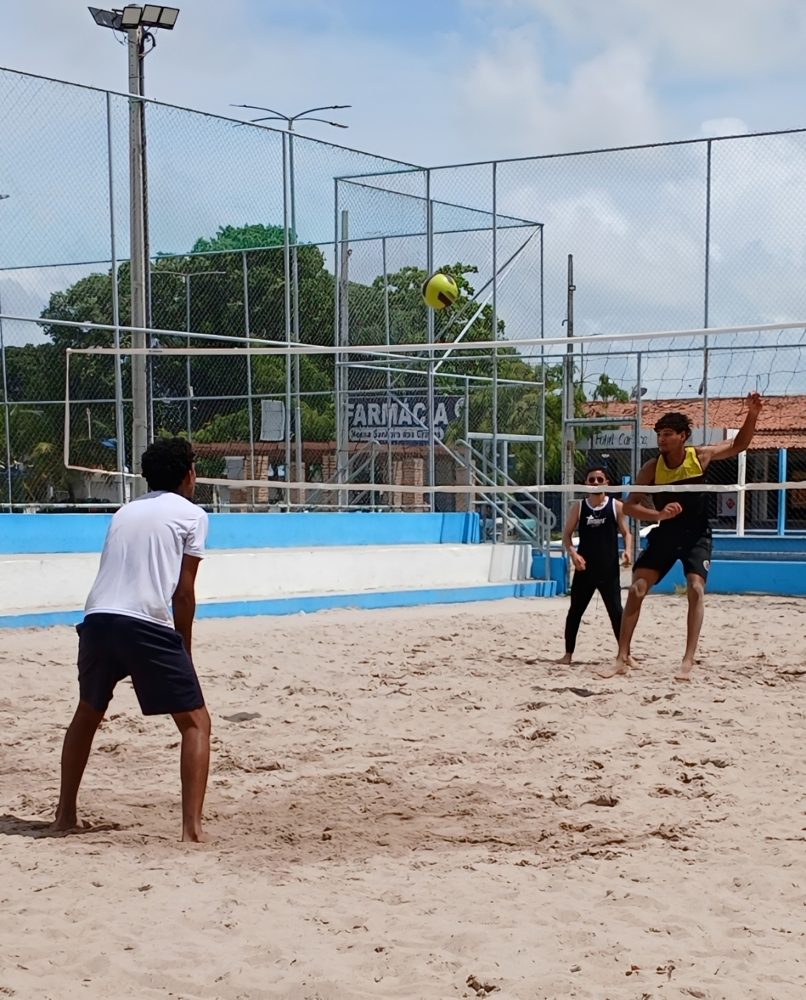

O NAZA-Vôlei é um projeto comunitário que reúne pessoas da região para a prática do vôlei de forma simples, saudável e divertida. Mais do que um esporte, o grupo busca promover momentos de convivência, amizade e bem-estar entre os participantes. Através da prática esportiva, incentivamos hábitos saudáveis, a socialização e o fortalecimento da comunidade local. Aqui todos são bem-vindos, independentemente da experiência no esporte, pois o objetivo principal é participar, aprender e se divertir juntos.
O projeto NAZA-Vôlei surgiu a partir da união de jovens e adultos ligados à Igreja do Nazareno com a ideia de incentivar a prática de atividades físicas e aproximar pessoas da comunidade por meio do esporte. Com o tempo os encontros passaram a reunir cada vez mais participantes, onde todos podem jogar e aproveitar o momento juntos, enquanto o grupo também busca incentivar um estilo de vida mais ativo e saudável, mostrando que a prática esportiva pode inspirar outras pessoas da comunidade a se movimentarem e participarem de momentos de lazer e integração.
As atividades do NAZA-Vôlei acontecem em espaços públicos da comunidade, como as quadras de vôlei na Orla do Janga e na Praça Sebastião Gomes de Melo. Esses locais se tornam pontos de encontro onde moradores e amigos se reúnem para jogar, treinar e aproveitar momentos de lazer ao ar livre. O ambiente é descontraído e acolhedor, incentivando tanto quem já pratica o esporte quanto quem deseja aprender ou simplesmente participar das atividades.

O NAZA-Vôlei é mais do que um grupo de esporte, é uma comunidade formada por pessoas que valorizam a atividade física, a amizade e a convivência saudável. Cada encontro é uma oportunidade de se exercitar, conhecer novas pessoas e fortalecer os laços da comunidade. Se você gosta de esporte ou quer apenas participar de um ambiente acolhedor, venha conhecer o projeto e fazer parte desse momento de integração e diversão.